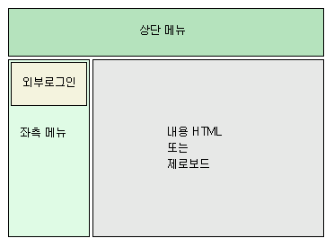
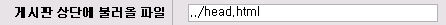
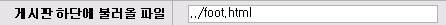
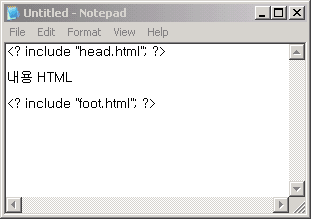

|
노프레임 사이트 만들기 3. 다음과 같은 형태의 사이트가 있다고 생각하여 봅시다.  3. 흔히 볼수 있는 레이아웃이며 nzeo.com 에서도 사용하고 있는 레이아웃입니다. 3. 위의 레이아웃같은 경우 총 3 부분으로 나누어 집니다.
3. 이것을 HTML 로 표시하면 다음과 같습니다. 3. <table border=1
width=400> 3. 위를 보시면 파란색, 검은색, 빨간색으로 나누어 놓았습니다. 3. 즉 파란색 부분인 다음의 부분을 head.html 로 저장합니다. 3. <table border=1
width=400> 3. 그리고 빨간색 부분을 foot.html 로 저장을 합니다. 3. <tr></td> 3. 그럼 노프레임사이트를 만들때 이 head.html 파일과 foot.html 파일만 이용하면 3. 외부 레이아웃은 정해진 것입니다. 3. 물론 head.html 과 foot.html 의 경우 위의 모습은 모두 대략적인 형태입니다. 3. 그리고 마지막으로 head.html 의 외부로그인 에는 옆에 메뉴에서 외부로그인 사용법을 보시면 됩니다. 3. 실제 적용하기 위해서 제로보드에서는 게시판, 또는 그룹설정에서 다음과 같이 지정합니다.   3. 물론 ../ 라는 경로는 제로보드 보다 상위 디렉토리에 있다는 표시입니다. 3. 이때 주의하실점은 제로보드에서 head.html 파일을 읽어올때경로가 바뀐다는 것입니다. 3. 즉 <img src=a.gif> 등으로 이미지등을 호출하면 경로가 제로보드의 경로로 바뀌게 되어서 3. zb41/a.gif 으로 파일을 찾으려 하기 때문에 이미지가 깨어집니다. 3. http://abc.com/a.gif 나 /images/a.gif 등의 어디서나 확인할수 있는 절대 경로로 이미지등의 경로를 3. 지정해 주어야 합니다. 3. 일반 html 파일의 경우 다음과 같이 하면 됩니다.  3. 위의 소스는 head.html이나 foot.html이 같은 디렉토리에 있다는 가정입니다.
3. 이상은 노프레임 사이트 적용에 대한 매우 간단한 예입니다. 3. 수없는 시행착오를 거치면서 html에 대해서, 그리고 간단한 php에 대해서 공부를 하셔야지 원하는 3. 형태의 사이트를 만드실수 있습니다. 3. 제로보드는 조금 더 편리하게 하는 하나의 도구일 뿐이며 이를 사용해서 자신만의 개성을 나타내는 것은 3. 자신에게 달린 것입니다.
|
||||